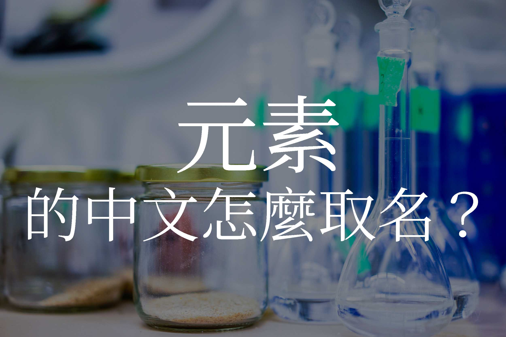

元素中文怎麼命名？
2017年4月29日

中文元素命名規則由 徐壽 (1818 ~ 1884) 制定
元素命名基本原則
- 一個中文漢字
元素命名時的狀態
- 常溫為攝氏 25 度
元素部首的原則
- 固態金屬為
金字邊 - 固態非金屬為
石字邊 - 氣態非金屬為
气字邊 - 液態元素為
水(左邊三點水) 字邊
命名例外
這些元素中文是古代已知有中文名稱的字，可直接使用
例如： 金、銀、銅、鐵、錫、硫、碳、硼、汞、鉛
中文新字
若命名時中文無此字，則以一個部首和一個偏旁造字，偏旁為讀音
以下有兩種原則
音譯
偏旁為國外讀音的第一個音節
例如：
Na（Natrium）＝金＋內→鈉
I（Iodine）＝石＋典→碘 (碘使用最後一個音節)
Ar（Argon）＝气＋亞→氬
意譯
使用此元素的特性
例如：
溴：有臭味
氯：綠色
氫：質量最輕
氮：「淡」取沖淡空氣之意
氧：「養」取支持生命之意